Enterprise DHCP Server Deployment and Management
Windows Server 2022 | Active Directory Domain: yasserteach.local
Project Overview
This project demonstrates the deployment and configuration of a centralized Dynamic Host Configuration Protocol (DHCP) service in a Windows Server Active Directory environment.
The objective was to deploy a dedicated DHCP server that automatically provides network configuration to domain-joined client devices. The DHCP server was integrated with Active Directory Domain Services and configured to distribute IP addresses, subnet masks, default gateway information, and DNS settings.
The project was implemented in a virtual lab using VMware Workstation and Windows Server 2022.
1. Business Scenario
A growing organization requires a centralized method for assigning and managing IP addresses across its internal network.
Manually assigning static IP addresses to every workstation creates several operational problems:
Increased administrative workload
Duplicate IP address conflicts
Incorrect subnet or gateway configurations
Inconsistent DNS configuration
Difficulty tracking used and available addresses
Limited scalability when new devices are added
To address these challenges, a dedicated Windows Server DHCP solution was deployed.
The DHCP server automatically assigns valid TCP/IP configurations to client devices and provides centralized control over IP address allocation.
2. Project Objectives
The main objectives of this project were to:
Deploy a dedicated Windows Server 2022 DHCP server
Join the DHCP server to the Active Directory domain
Install the Windows Server DHCP role
Authorize the DHCP server in Active Directory
Create and configure an IPv4 DHCP scope
Configure DHCP scope options
Define excluded IP address ranges
Configure DHCP lease duration
Activate the DHCP scope
Test automatic IP address assignment
Verify communication with the domain controller
Verify DNS name resolution
Create and test a DHCP reservation
Monitor active DHCP leases
Apply DHCP management and security best practices
Document the complete implementation for a professional portfolio
3. Lab Environment
3.1 Virtualization Platform
VMware Workstation Pro
Host-only virtual network
Isolated internal lab environment
3.2 Operating Systems
Windows Server 2022
Windows 11 client
3.3 Domain Environment
Active Directory domain: yasserteach.local
Domain Controller: DC01
DHCP Server: DHCP01
Client computer: W11-CLIENT01
3.4 Server Roles
3.5 DC01
The domain controller provided the following services:
Active Directory Domain Services
Domain Name System
Domain authentication
Centralized identity management
3.6 DHCP01
The DHCP server provided:
Automatic IPv4 address allocation
DHCP lease management
Scope management
DNS server distribution
Default gateway distribution
DHCP reservations
Centralized IP address administration
3.7 W11-CLIENT01
The Windows 11 virtual machine was used to test:
Automatic IP address assignment
DHCP lease acquisition
DNS configuration
Domain communication
Network connectivity
DHCP reservations
4. Logical Network Architecture
- VMware Host-Only Network: 192.168.10.0/24
- DC01 — AD DS and DNS — 192.168.10.10
- DHCP01 — DHCP Server — 192.168.10.20
- DHCP Scope: 192.168.10.100–192.168.10.200
- W11-CLIENT01 — DHCP Client
All systems use the same isolated VMware host-only network so DHCP broadcast traffic can reach DHCP01, while DC01 provides Active Directory Domain Services and DNS.
5. IP Addressing Plan (Actual Lab Values)
The following addressing structure reflects the actual values configured and verified in the lab, as confirmed by the configuration and PowerShell screenshots.
| Device or Purpose | Addressing Method | Address Used in the Lab |
| Network address | Static | 192.168.10.0/24 |
| Domain Controller (DC01) | Static | 192.168.10.10 |
| DHCP Server (DHCP01) | Static | 192.168.10.20 |
| Default Gateway | Static / lab-defined | 192.168.10.1 |
| DHCP Scope Start | Dynamic | 192.168.10.100 |
| DHCP Scope End | Dynamic | 192.168.10.200 |
| Exclusion Range | Dynamic pool exclusion | 192.168.10.100 – 192.168.10.110 |
| Client Lease Obtained (W11-CLIENT01) | Dynamic | 192.168.10.111 |
| Primary DNS Server | Static | 192.168.10.10 |
| DNS Domain Name | DHCP option | yasserteach.local |
| Subnet Mask | DHCP option | 255.255.255.0 |
| DHCP Lease Duration | Scope setting | 8 days |
The infrastructure servers were assigned static IP addresses. Client devices received their network configuration dynamically from the DHCP server.
6. Project Implementation
6.1 Prepare the Virtual Machines
Three virtual machines were prepared in VMware Workstation:
DC01
DHCP01
W11-CLIENT01
Each virtual machine was configured with:
Sufficient memory
A virtual network adapter
Windows Server 2022 or Windows 11
VMware host-only network connectivity
All virtual machines were connected to the same VMware virtual network. This was an important requirement because DHCP initially depends on broadcast traffic. If the client and the DHCP server are connected to different isolated virtual networks, the DHCP Discover message will not reach the server.
6.2 Verify the Domain Controller
Before deploying DHCP, the domain controller was verified. The domain controller had already been configured with:
Windows Server 2022
Active Directory Domain Services
DNS Server
The yasserteach.local domain
A static IPv4 address
The DNS configuration on the domain controller was also checked to ensure that it pointed to the correct internal DNS service. The following command was used to review the network configuration:
ipconfig /allThe domain controller needed to use its own internal DNS service rather than an external public DNS server for Active Directory name resolution.
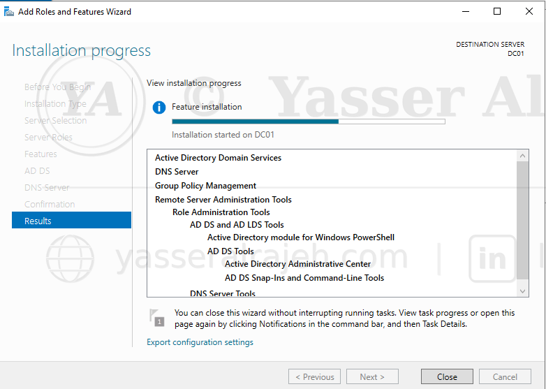
Add Roles and Features Wizard on DC01 — installing Active Directory Domain Services, DNS Server, and Group Policy Management (initial domain controller setup).
6.3 Install Windows Server 2022 on DHCP01
Windows Server 2022 was installed on the second virtual machine. After installation, the initial server configuration was completed. The following settings were configured:
Computer name
Administrator password
Time zone
Network adapter
Static IPv4 address
Preferred DNS server
The server was renamed to: DHCP01. The server was restarted after the computer name was changed.
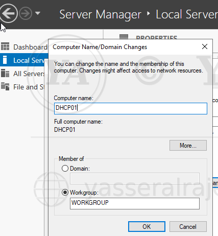
Computer Name/Domain Changes — renaming the server to DHCP01 (still in WORKGROUP, prior to joining the domain).
6.4 Configure a Static IP Address on DHCP01
A DHCP server must use a static IP address. A dynamic address should not be used because the DHCP server's own IP address must remain consistent for:
Active Directory authorization
Server administration
DNS communication
Monitoring
Troubleshooting
Client and administrator connectivity
The Ethernet adapter properties were opened, followed by Internet Protocol Version 4 (TCP/IPv4). A static configuration was assigned — the actual values used in the lab:
IP Address: 192.168.10.20 Subnet Mask: 255.255.255.0 Default Gateway: 192.168.10.1 Preferred DNS: 192.168.10.10
The preferred DNS server was configured as the IP address of DC01. This was necessary because DC01 hosted the DNS zone for yasserteach.local.
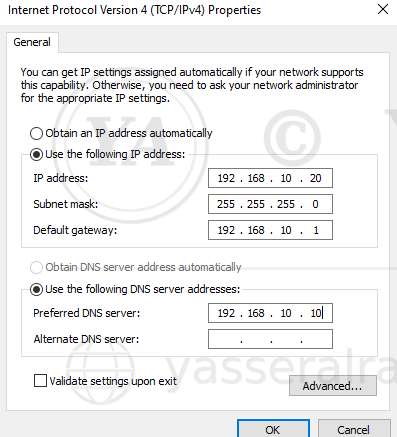
Internet Protocol Version 4 (TCP/IPv4) Properties — the actual static configuration applied on DHCP01.
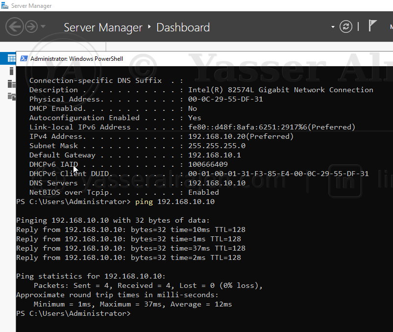
Verifying the static configuration and DNS server via PowerShell, and a successful ping test to DC01 (192.168.10.10).
6.5 Test Communication with the Domain Controller
Before joining the DHCP server to the domain, network connectivity was tested. The following command tested connectivity using the domain controller's IP address:
ping 192.168.10.10Name resolution was then tested using the server name:
ping DC01The domain name was also tested:
ping yasserteach.localAdditional DNS verification was performed with:
nslookup DC01.yasserteach.local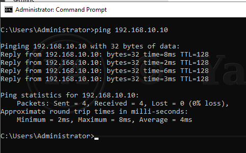
Command Prompt — ping 192.168.10.10 from DHCP01, confirming successful Layer 3 connectivity to DC01.
Successful IP communication confirmed Layer 3 connectivity. Successful hostname resolution confirmed that the DHCP server was using the correct internal DNS server.
6.6 Join DHCP01 to the Active Directory Domain
After confirming connectivity and DNS resolution, DHCP01 was joined to the Active Directory domain: yasserteach.local. Domain administrator credentials were provided when prompted. After the successful domain join, the server displayed a confirmation message welcoming it to the domain. DHCP01 was restarted to complete the domain membership process.
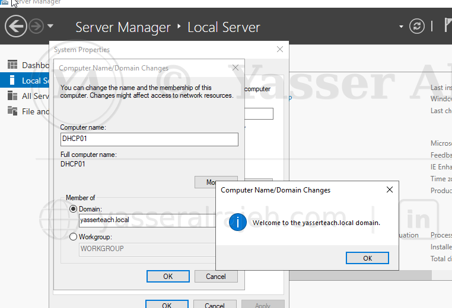
Joining DHCP01 to the yasserteach.local domain via Computer Name/Domain Changes.
After the restart, the server was accessed using a domain account:
YASSERTEACH\yasser
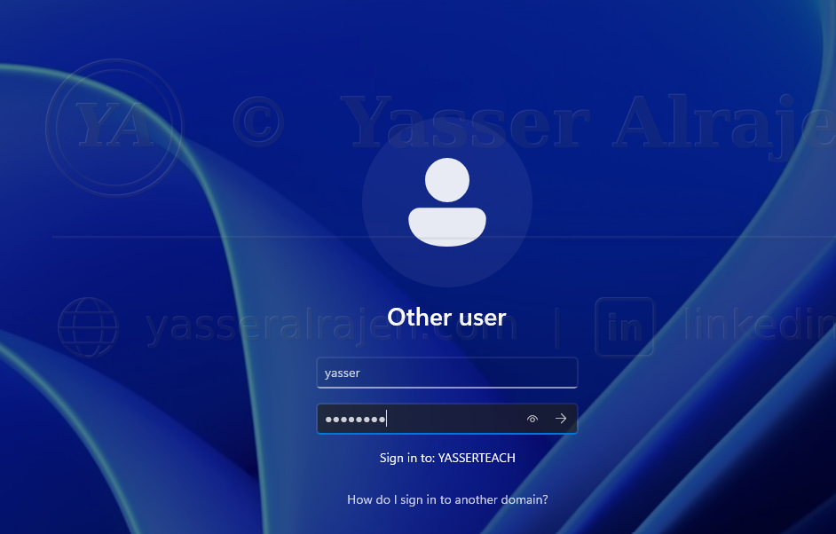
Signing in to DHCP01 using a YASSERTEACH domain account.
Domain membership was verified using:
systeminfo | findstr /B /C:"Domain"
Expected result: Domain: yasserteach.local
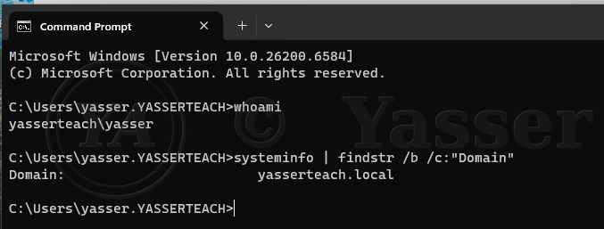
systeminfo confirming domain membership: Domain: yasserteach.local.
6.7 Install the DHCP Server Role
The DHCP Server role was installed from Server Manager. The following process was used:
Opened Server Manager
Selected Manage
Selected Add Roles and Features
Selected Role-based or feature-based installation
Selected DHCP01
Selected DHCP Server
Added the required management tools
Continued through the wizard
Selected Install
Waited for the installation to complete
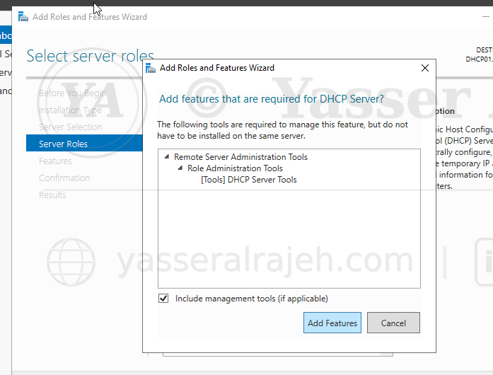
Add Roles and Features Wizard — installing the DHCP Server role with management tools.
The DHCP role could also be installed using PowerShell:
Install-WindowsFeature DHCP -IncludeManagementToolsThe installation status could be verified using:
Get-WindowsFeature DHCP6.8 Complete the DHCP Post-Installation Configuration
After installing the DHCP role, Server Manager displayed a post-deployment notification. The notification was opened and the DHCP post-installation configuration wizard was completed. The wizard performed two important tasks:
Created the required DHCP security groups
Authorized the DHCP server in Active Directory
The following local security groups were created: DHCP Administrators, DHCP Users. The server was authorized using domain administrative credentials.
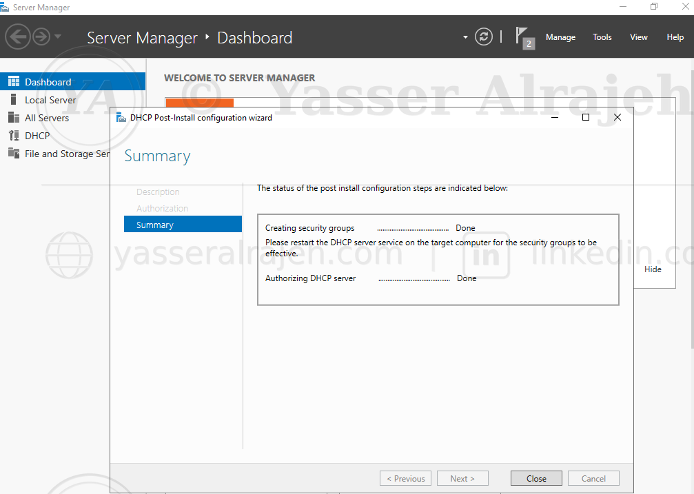
DHCP post-installation configuration wizard confirming security groups created and the server authorized.
7. DHCP Authorization in Active Directory
7.1 Why DHCP Authorization Is Required
In an Active Directory environment, a Windows DHCP server must be authorized before it can distribute IP addresses. DHCP authorization protects the network from unauthorized or rogue DHCP servers. A rogue DHCP server could distribute incorrect settings such as:
An incorrect default gateway
A malicious DNS server
An invalid subnet mask
An incorrect DNS domain
Conflicting IP addresses
Authorization ensures that only approved DHCP servers can respond to client requests.
7.2 Verify DHCP Authorization
The DHCP management console was opened by running:
dhcpmgmt.msc
The server status was reviewed. An authorized server normally displays a green status indicator. Authorization could also be verified using PowerShell:
Get-DhcpServerInDCExpected information included:
DHCP server hostname
DHCP server IP address
Active Directory authorization status
If manual authorization was required, the following command could be used (using the actual DHCP01 address):
Add-DhcpServerInDC \
-DnsName "DHCP01.yasserteach.local" \
-IPAddress 192.168.10.208. Create an IPv4 DHCP Scope
An IPv4 scope was created to define the pool of addresses that could be assigned to clients. The DHCP management console was opened:
Server Manager → Tools → DHCP
The following path was expanded: DHCP → DHCP01 → IPv4. The IPv4 node was right-clicked and New Scope was selected.
8.1 Scope Name and Description
A descriptive scope name was entered — Corporate Client Network — with the description: "Provides dynamic IPv4 configuration to internal domain client devices." A professional scope name makes it easier for administrators to identify the network purpose.
8.2 Configure the IP Address Range
The dynamic IP address range configured in the lab:
Start IP Address: 192.168.10.100 End IP Address: 192.168.10.200 Prefix Length: /24 Subnet Mask: 255.255.255.0
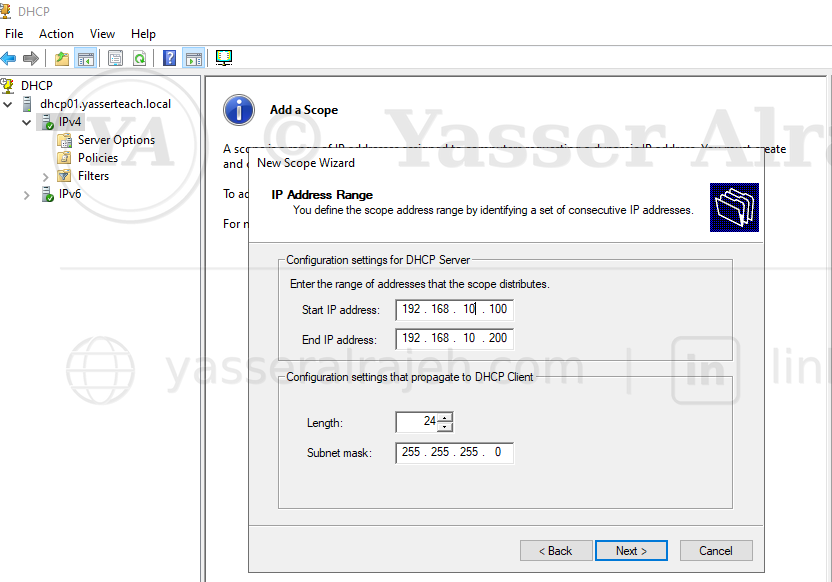
New Scope Wizard — configuring the IPv4 address range (192.168.10.100 – 192.168.10.200).
8.3 Configure Exclusions
An exclusion range was configured to prevent DHCP from assigning specific addresses. The actual exclusion range configured in the lab:
192.168.10.100 – 192.168.10.110
Excluded addresses can be used for:
Servers
Network devices
Printers
Firewalls
Access points
Management interfaces
Future infrastructure devices
Addresses assigned manually to infrastructure systems should not be included in the dynamic DHCP pool.
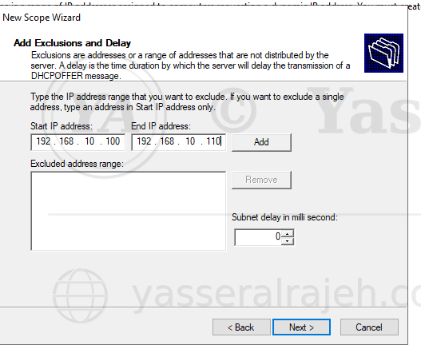
New Scope Wizard — Add Exclusions and Delay (192.168.10.100 – 192.168.10.110).
8.4 Configure Lease Duration
The DHCP lease duration configured in the lab was 8 days, confirmed later via Get-DhcpServerv4Scope. The lease duration determines how long a client can use an assigned address before renewing it. A longer lease is suitable for stable corporate networks where devices remain connected for long periods. A shorter lease may be more appropriate for:
Guest networks
Training environments
Wireless networks
Networks with frequent client changes
For this lab, the default lease duration was sufficient.
9. Configure DHCP Scope Options
DHCP scope options provide clients with additional network information. The following options were configured.
9.1 Option 003: Router
The default gateway address configured:
192.168.10.1
This option tells clients where to send traffic destined for other networks. In a completely isolated host-only lab without routing, the gateway may be omitted or configured according to the virtual network design.
9.2 Option 006: DNS Servers
The internal DNS server configured:
192.168.10.10
This was the IP address of DC01. Using the domain controller as the DNS server allowed clients to resolve:
Domain controller names
Active Directory service records
Domain names
Internal hostnames
Domain resources
Using a public DNS server directly on a domain client could prevent Active Directory domain discovery and internal name resolution.
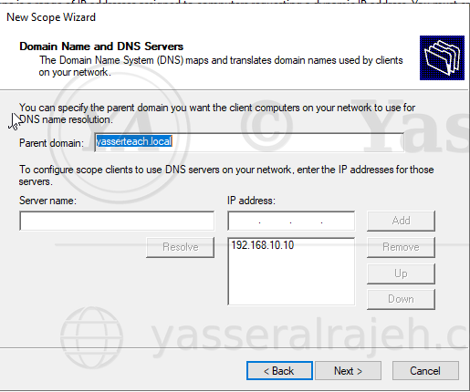
New Scope Wizard — Domain Name and DNS Servers, configured with 192.168.10.10.
9.3 Option 015: DNS Domain Name
The internal DNS domain was configured as: yasserteach.local. This option provides clients with the domain suffix used for internal DNS queries.
9.4 Scope Option Summary
| Option | Name | Configured Value |
| 003 | Router | 192.168.10.1 |
| 006 | DNS Servers | 192.168.10.10 (DC01) |
| 015 | DNS Domain Name | yasserteach.local |
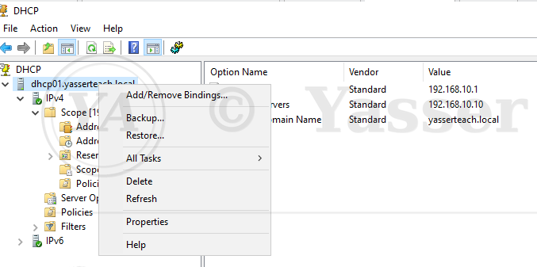
DHCP console — Scope Options showing the configured Router, DNS Servers, and DNS Domain Name values.
10. Activate the DHCP Scope
After reviewing the scope settings, the scope was activated. An inactive scope cannot distribute IP addresses. The activated scope appeared under: IPv4 → Corporate Client Network. The scope contained the following management sections:
Address Pool
Address Leases
Reservations
Scope Options
Policies
The scope status was verified as active.
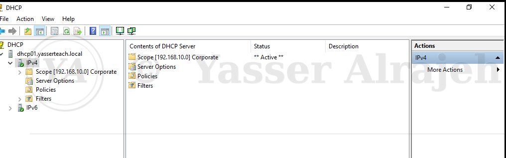
DHCP console showing the Corporate Client Network scope with an Active status.
11. Verify the DHCP Server Service
The DHCP Server service was checked using the Services console and PowerShell:
Get-Service DHCPServerExpected status: Running / Automatic. If required, the service could be started using:
Start-Service DHCPServerThe startup type could be configured using:
Set-Service DHCPServer -StartupType Automatic12. Prepare the Windows 11 DHCP Client
A Windows 11 virtual machine was used to test the DHCP deployment. The Windows 11 network adapter was connected to the same VMware host-only network as DC01 and DHCP01. The IPv4 adapter configuration was changed to "Obtain an IP address automatically" and "Obtain DNS server address automatically", allowing the computer to request its network configuration from the DHCP server.
13. Request a DHCP Lease
The existing network configuration was released:
ipconfig /release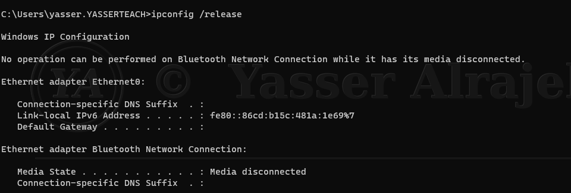
ipconfig /release on W11-CLIENT01.A new DHCP lease was requested:
ipconfig /renew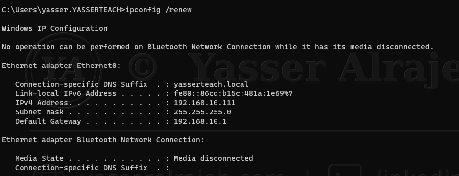
ipconfig /renew — the client received IPv4 address
192.168.10.111.The complete client configuration was displayed using:
ipconfig /allThe output was reviewed to confirm the following:
DHCP Enabled: Yes
Valid IPv4 address from the configured scope
Correct subnet mask
Correct default gateway
Correct DNS server
Correct DNS suffix
DHCP server address
Lease obtained time
Lease expiration time
Actual output obtained on W11-CLIENT01:
DHCP Enabled: Yes IPv4 Address: 192.168.10.111 Subnet Mask: 255.255.255.0 Default Gateway: 192.168.10.1 DHCP Server: 192.168.10.20 DNS Servers: 192.168.10.10 Connection-specific DNS Suffix: yasserteach.local
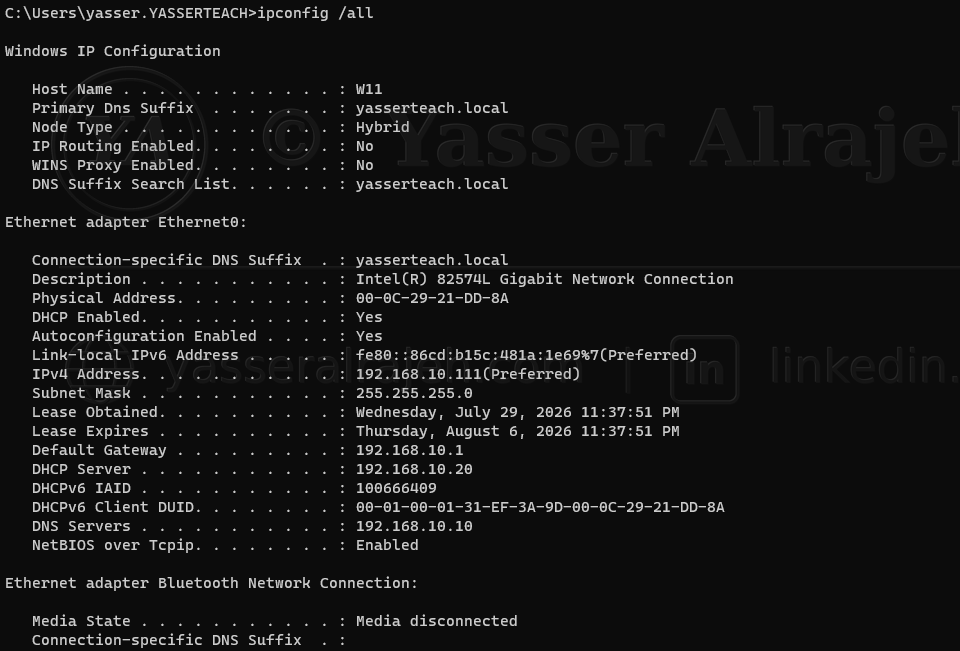
ipconfig /all on W11-CLIENT01 — full lease details (IP
192.168.10.111, DHCP Server 192.168.10.20).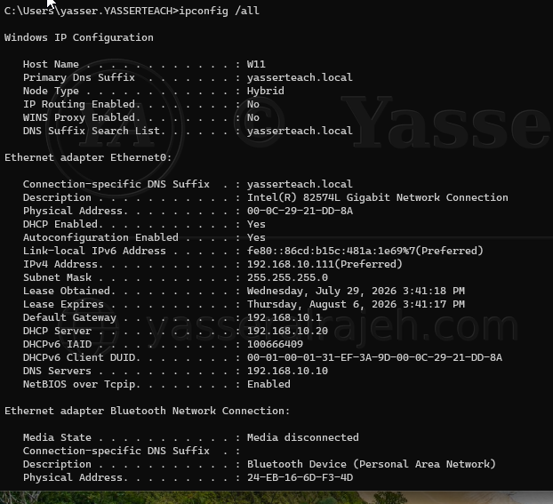
ipconfig /all — DHCP server and DNS information on the
client.14. Understand the DHCP Lease Process
When the Windows 11 client requested an IP address, the DHCP process followed the DORA sequence.
14.1 DHCP Discover
The client broadcast a DHCP Discover message to locate available DHCP servers.
14.2 DHCP Offer
DHCP01 responded with an available IP address and configuration information.
14.3 DHCP Request
The client requested the offered IP address.
14.4 DHCP Acknowledgment
DHCP01 approved the request and created the lease.
The process is summarized as: Discover → Offer → Request → Acknowledge. This process is commonly known as DHCP DORA.
15. Verify the DHCP Lease on the Server
On DHCP01, the following location was opened: DHCP Console → IPv4 → Corporate Client Network → Address Leases. The Windows 11 client appeared in the lease list. The lease record contained information such as:
Assigned IP address
Client hostname
Lease expiration date
Client identifier
Lease status
Address type
This confirmed that the DHCP server had successfully issued and recorded the client lease.
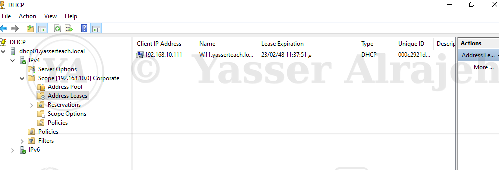
DHCP Address Leases console — W11-CLIENT01 listed with IP 192.168.10.111.
16. Connectivity Testing
After the client received its DHCP configuration, several connectivity tests were performed.
16.1 Test the DHCP Server
ping DHCP0116.2 Test the Domain Controller by IP Address
ping 192.168.10.1016.3 Test the Domain Controller by Hostname
ping DC0116.4 Test the Domain Name
ping yasserteach.local16.5 Test DNS Resolution
nslookup DC01.yasserteach.local16.6 Display the DNS Configuration
ipconfig /allThese tests verified: client-to-server communication, TCP/IP configuration, internal DNS resolution, domain connectivity, and correct DHCP option distribution.
17. Create a DHCP Reservation
A DHCP reservation was created to provide a specific client with the same IP address whenever it requested a lease. Reservations are useful for devices that require predictable addresses but should remain centrally managed through DHCP. Examples include:
Network printers
IP phones
Security cameras
Application appliances
Monitoring devices
Administrative workstations
17.1 Obtain the Client MAC Address
On the Windows 11 client, the following command was used:
ipconfig /allThe physical address of the Ethernet adapter was recorded — the actual MAC address of W11-CLIENT01:
00-0C-29-21-DD-8A
The MAC address could also be displayed using:
getmac
17.2 Create the Reservation
On DHCP01, the following location was opened: IPv4 → Corporate Client Network → Reservations. A new reservation was created with:
Reservation Name: W11-CLIENT01 IP Address: 192.168.10.111 MAC Address: 00-0C-29-21-DD-8A Description: Reserved address for Windows 11 test client Supported Type: Both
The reserved IP address (192.168.10.111) was the same address the client had already been leasing, taken from the scope range.
17.3 Test the Reservation
On the Windows 11 client, the existing address was released and renewed:
ipconfig /release ipconfig /renewThe configuration was checked again with ipconfig /all. The client received the reserved IP address (192.168.10.111). The DHCP console was also reviewed to verify that the reservation was active.
18. DHCP Management Verification
The following DHCP components were reviewed after implementation.
18.1 Address Pool
Confirmed the configured dynamic address range and exclusions.
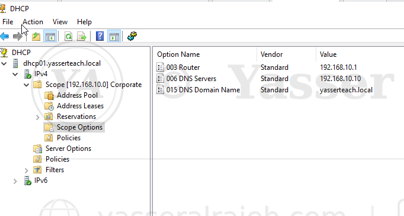
DHCP console tree — Address Pool node under the Corporate Client Network scope.
18.2 Address Leases
Confirmed the addresses currently assigned to clients.
18.3 Reservations
Confirmed the permanently mapped client address.
18.4 Scope Options
Confirmed the gateway, DNS server, and DNS domain settings.
18.5 Server Authorization
Confirmed that DHCP01 was authorized in Active Directory.
18.6 DHCP Service
Confirmed that the DHCP Server service was running automatically.
19. PowerShell Verification Commands
The following PowerShell commands can be used to verify and document the deployment.
19.1 Display Authorized DHCP Servers
Get-DhcpServerInDC19.2 Display IPv4 Scopes
Get-DhcpServerv4Scope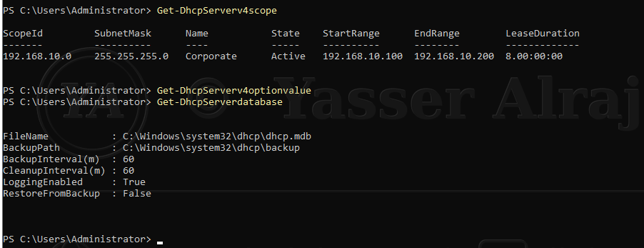
PowerShell output — Get-DhcpServerv4Scope (192.168.10.0, Active,
192.168.10.100–200, 8 day lease) and Get-DhcpServerDatabase.19.3 Display the DHCP Address Pool
Get-DhcpServerv4ExclusionRange \
-ComputerName DHCP01 \
-ScopeId 192.168.10.019.4 Display Scope Options
Get-DhcpServerv4OptionValue \
-ComputerName DHCP01 \
-ScopeId 192.168.10.019.5 Display Active Leases
Get-DhcpServerv4Lease \
-ComputerName DHCP01 \
-ScopeId 192.168.10.0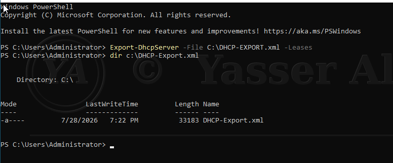
Export-DhcpServer — exporting the DHCP configuration and active
leases to C:\DHCP-EXPORT.xml.19.6 Display Reservations
Get-DhcpServerv4Reservation \
-ComputerName DHCP01 \
-ScopeId 192.168.10.019.7 Check the DHCP Service
Get-Service DHCPServer19.8 Display DHCP Server Statistics
Get-DhcpServerv4Statistics \
-ComputerName DHCP0120. Troubleshooting Performed
During the project, network communication and DHCP functionality were affected by the virtual network configuration. The main troubleshooting areas included:
VMware network adapter configuration
DNS server configuration
Server-to-server connectivity
DHCP authorization
DHCP scope activation
Client automatic addressing
Windows Firewall verification
20.1 Servers Could Not Communicate Correctly
Symptom: The servers were installed correctly, but communication between the virtual machines was inconsistent. IP-based connectivity and name-based connectivity did not always produce the same results.
Root Cause: The virtual machines were not initially operating through the correct common VMware virtual network. DHCP requires the client broadcast traffic to reach the DHCP server; if the virtual machines are connected to different VMware network segments, DHCP requests cannot reach DHCP01.
Resolution: The network adapters for the virtual machines were reviewed and connected to the same VMware host-only network. The affected virtual machines were powered on again after the virtual network configuration was corrected, and connectivity was retested using ping <server-IP>, ping DC01, and ping DHCP01. Communication was successfully restored.
20.2 IP Connectivity Worked but Name Resolution Failed
Symptom: The server could communicate with the domain controller using its IP address, but hostname or domain resolution failed (ping by IP address succeeded; ping by hostname failed).
Root Cause: The affected server or client was not using the domain controller as its preferred DNS server. Active Directory clients must query the internal DNS server hosting the Active Directory DNS zone.
Resolution: The preferred DNS server was changed to the IP address of DC01 (192.168.10.10). The DNS client cache was cleared (ipconfig /flushdns) and DNS registration was refreshed (ipconfig /registerdns). Name resolution was tested again with nslookup DC01.yasserteach.local and ping DC01 — the hostname resolved successfully.
20.3 DHCP Server Was Installed but Did Not Distribute Addresses
Verification Performed: DHCP Server role installation, DHCP service status, DHCP server authorization, scope activation, available addresses in the pool, client and server VMware network, client automatic IPv4 configuration, and DHCP scope options were all checked.
Resolution: The DHCP server was authorized in Active Directory, the IPv4 scope was activated, and all virtual machines were placed on the same VMware host-only network. The Windows 11 client then successfully received an address using ipconfig /release and ipconfig /renew.
20.4 Windows Firewall Was Reviewed
Windows Firewall rules were checked during troubleshooting to confirm that required DHCP and network traffic was not being blocked. However, firewall rules were not treated as the only possible cause — the virtual network configuration, DNS settings, DHCP authorization, and active scope configuration were also validated. This troubleshooting approach helped identify the underlying network configuration problem instead of repeatedly applying the same firewall checks.
21. Security Considerations
Several security practices were applied or considered during the deployment.
21.1 Active Directory Authorization
Only an authorized DHCP server was permitted to distribute addresses.
21.2 Dedicated Server Role
The DHCP role was deployed on a dedicated member server rather than directly on the domain controller. This improves role separation, troubleshooting, security administration, service management, and future scalability.
21.3 Controlled Address Pool
Only a defined range of addresses (192.168.10.100–200) was made available for dynamic assignment.
21.4 Exclusion Ranges
Infrastructure addresses (192.168.10.100–110) were protected from accidental DHCP allocation.
21.5 Centralized DNS Distribution
Clients were configured to use the internal DNS server (DC01, 192.168.10.10) rather than arbitrary external DNS services.
21.6 Least Privilege Administration
DHCP management can be delegated through the DHCP Administrators group. Administrators do not necessarily need full Domain Admin privileges for routine DHCP management.
21.7 Monitoring Leases
Active leases and reservations can be reviewed to identify unexpected or unauthorized devices.
21.8 Audit Logging
DHCP audit logging can be used to record lease operations and server activity. The default DHCP log location is C:\Windows\System32\dhcp.
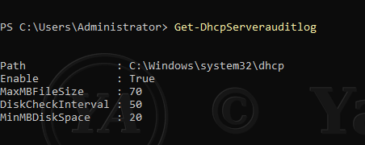
Get-DhcpServerAuditLog — audit log configuration on
DHCP01.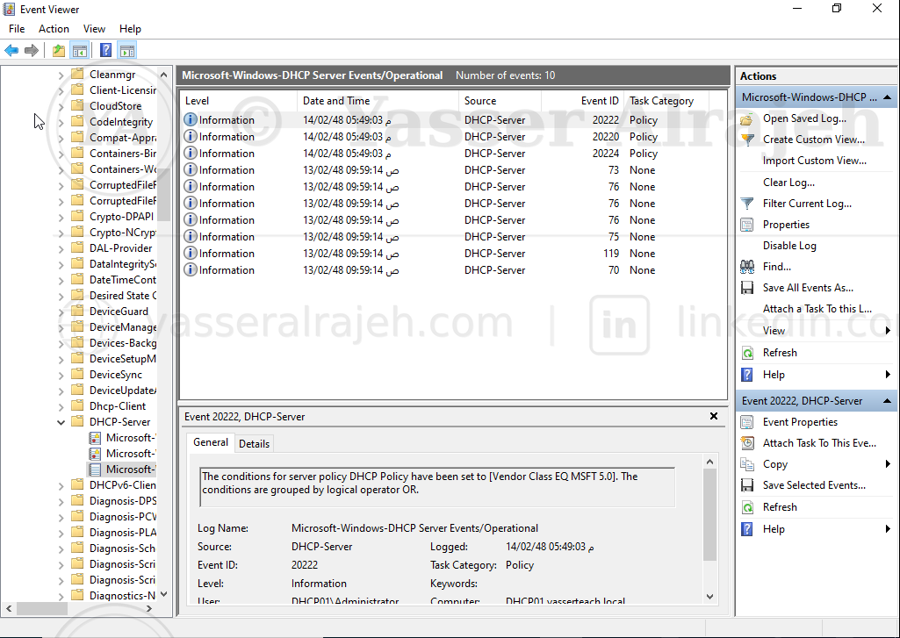
Event Viewer — Microsoft-Windows-DHCP-Server Operational log recording server policy events.
22. DHCP Best Practices Applied
The project followed several Windows Server DHCP best practices:
Used a dedicated DHCP member server
Assigned static IP addresses to infrastructure servers
Used the domain controller as the internal DNS server
Authorized the DHCP server in Active Directory
Used a controlled DHCP address pool
Reserved infrastructure addresses outside the dynamic range
Configured DHCP scope options centrally
Used descriptive scope names
Tested both IP connectivity and DNS resolution
Verified client leases from the server
Used reservations for predictable client addressing
Documented the complete addressing structure
Kept the client and DHCP server on the same virtual network
Verified DHCP services after configuration
23. Validation Checklist
| Validation Item | Result |
| DHCP01 has a static IP address | Successful |
| DHCP01 uses DC01 as DNS | Successful |
| DHCP01 joined yasserteach.local | Successful |
| DHCP Server role installed | Successful |
| DHCP management tools installed | Successful |
| DHCP server authorized in Active Directory | Successful |
| IPv4 scope created | Successful |
| Address pool configured | Successful |
| Exclusion range configured | Successful |
| Lease duration configured | Successful |
| DHCP scope options configured | Successful |
| Scope activated | Successful |
| DHCP Server service running | Successful |
| Windows client configured for automatic addressing | Successful |
| Windows client received a valid lease | Successful |
| Correct subnet mask received | Successful |
| Correct DNS server received | Successful |
| Correct DNS suffix received | Successful |
| Client appeared under Address Leases | Successful |
| Client communicated with DC01 | Successful |
| Client resolved internal DNS names | Successful |
| DHCP reservation created and tested | Successful |
24. Final Results
The Windows Server DHCP deployment was completed successfully. The final solution provided:
Centralized IPv4 address allocation
Automated client network configuration
Active Directory-integrated DHCP authorization
Centralized DNS server distribution
DNS domain suffix distribution
Controlled dynamic address allocation
Excluded infrastructure address ranges
DHCP lease tracking
Client reservations
Improved IP address consistency
Reduced manual configuration
Easier network administration
A scalable foundation for additional client devices
The Windows 11 client successfully obtained its network configuration from DHCP01. The client was able to:
Receive a valid IPv4 address
Identify the DHCP server
Use the correct subnet mask
Use the internal DNS server
Resolve the Active Directory domain
Communicate with the domain controller
Receive a reserved address when configured
25. Skills Demonstrated
Windows Server 2022 administration
DHCP Server deployment
DHCP scope configuration
DHCP scope options
DHCP lease management
DHCP reservations
Active Directory integration
DHCP server authorization
IPv4 subnet configuration
DNS client configuration
Windows 11 network configuration
VMware virtual networking
TCP/IP troubleshooting
DNS troubleshooting
PowerShell administrationEnterprise infrastructure documentation
26. Technologies Used
Windows Server 2022
Windows 11
Active Directory Domain Services
Windows DNS Server
Windows DHCP Server
PowerShellCommand Prompt
VMware Workstation Pro
IPv4
TCP/IP
DNS
DHCP
Active Directory
27. Project Outcome
This project successfully simulated a real-world enterprise DHCP deployment. Instead of manually configuring every endpoint, client devices can now automatically obtain their network configuration from a centrally managed Windows Server DHCP service.
The project demonstrates the ability to design, deploy, secure, test, troubleshoot, and document a core Microsoft infrastructure service within an Active Directory environment.
28. Short Project Summary
28.1 Enterprise DHCP Server Deployment
Deployed a dedicated Windows Server 2022 DHCP server in an Active Directory domain environment. Configured a centralized IPv4 scope, exclusions, lease duration, gateway, internal DNS server, and DNS domain options. Authorized the DHCP server in Active Directory and validated automatic address allocation using a Windows 11 client.
Created and tested a DHCP reservation, monitored active leases, and resolved VMware virtual networking and DNS name-resolution issues. The final solution provided centralized, consistent, and scalable network configuration for domain client devices.
29. Resume Project Description
29.1 Enterprise DHCP Server Deployment — Windows Server 2022
Deployed and configured a dedicated Windows Server 2022 DHCP server.
Integrated and authorized the DHCP server within Active Directory.
Created an IPv4 scope with address pools, exclusions, and lease settings.
Configured gateway, DNS server, and DNS domain DHCP options.
Tested DHCP address allocation using a Windows 11 client.
Created and validated a MAC-based DHCP reservation.
Monitored active leases and verified server statistics using PowerShell.
Troubleshot VMware network segmentation and internal DNS resolution.
Documented the complete implementation, testing, and final results.